Week 2 Measures of distribution, central tendency, PLOTS… oh my!
We covered a lot of ground this week talking about measures of central tendency and introducing ourselves to distributions. When you get a chance be sure to check out some of the in-class workshopping code and examples as they are posted on Box. These will help you remember what we did in the workshop and you can compare them to your source and output.
This week I want to expand upon a few things that were touched upon in the workshop and in lecture. This one might be a little lengthly, but it should serve to supplement your assigned readings and help you a little with the home work. Before jumping in, let’s install and load the necessary packages in R. This week we will make use of psych and several of the core packages of the tidyverse. I’ll also be using data.table which provides another way of importing data (in addition to the examples from last week). Using the cheat code from last week’s walkthrough
# 1. check to see if pacman is on your computer and if not, let's install it:
if (!require("pacman")) install.packages("pacman", repos = "http://cran.us.r-project.org")
# 2. install all other packages that we will be using:
pacman::p_load(psych, tidyverse, data.table)2.1 Getting measures of central tendency
In this week’s workshop, we touched upon using psych::describe() to generate summary stats of data in a data frame, as well as generating a simple histogram using the hist() function. Our starting point was data from an example provided in the Howell textbook.
# importing data, here I'm using data.table. I prefer data table as it produces
# truncated output.
exampleData <- data.table::fread("https://www.uvm.edu/~dhowell/methods8/DataFiles/Tab2-1.dat")Invoking class(exampleData) tells us that exampleData is a data frame. Invoking names(exampleData) provides us with the header names:
class(exampleData)## [1] "data.table" "data.frame"names(exampleData)## [1] "Trial" "RxTime" "NStim" "YesNo"From here we discussed how to call upon a specific column in a data frame using the $ operator:
# column of Trial(s):
exampleData$Trial## [1] 1 2 3 4 5 6 7 8 9 10 11 12 13 14 15 16 17
## [18] 18 19 20 21 22 23 24 25 26 27 28 29 30 31 32 33 34
## [35] 35 36 37 38 39 40 41 42 43 44 45 46 47 48 49 50 51
## [52] 52 53 54 55 56 57 58 59 60 61 62 63 64 65 66 67 68
## [69] 69 70 71 72 73 74 75 76 77 78 79 80 81 82 83 84 85
## [86] 86 87 88 89 90 91 92 93 94 95 96 97 98 99 100 101 102
## [103] 103 104 105 106 107 108 109 110 111 112 113 114 115 116 117 118 119
## [120] 120 121 122 123 124 125 126 127 128 129 130 131 132 133 134 135 136
## [137] 137 138 139 140 141 142 143 144 145 146 147 148 149 150 151 152 153
## [154] 154 155 156 157 158 159 160 161 162 163 164 165 166 167 168 169 170
## [171] 171 172 173 174 175 176 177 178 179 180 181 182 183 184 185 186 187
## [188] 188 189 190 191 192 193 194 195 196 197 198 199 200 201 202 203 204
## [205] 205 206 207 208 209 210 211 212 213 214 215 216 217 218 219 220 221
## [222] 222 223 224 225 226 227 228 229 230 231 232 233 234 235 236 237 238
## [239] 239 240 241 242 243 244 245 246 247 248 249 250 251 252 253 254 255
## [256] 256 257 258 259 260 261 262 263 264 265 266 267 268 269 270 271 272
## [273] 273 274 275 276 277 278 279 280 281 282 283 284 285 286 287 288 289
## [290] 290 291 292 293 294 295 296 297 298 299 300# column of RxTime (reaction time)
exampleData$RxTime## [1] 40 41 47 38 40 37 38 47 45 61 54 67 49 43 52 39 46
## [18] 47 45 43 39 49 50 44 53 46 64 51 40 41 44 48 50 42
## [35] 90 51 55 60 47 45 41 42 72 36 43 94 45 51 46 52 52
## [52] 45 74 56 53 59 43 46 51 40 48 47 57 54 44 56 47 62
## [69] 44 53 48 104 50 58 52 57 66 49 59 56 71 76 54 71 44
## [86] 67 45 79 46 57 58 47 73 67 46 57 52 61 72 104 73 83
## [103] 55 59 51 65 61 64 63 86 42 65 62 62 51 62 72 55 58
## [120] 46 67 56 52 46 62 51 51 61 60 75 53 59 56 50 43 58
## [137] 67 52 56 80 53 72 62 59 47 62 53 52 46 60 73 47 63
## [154] 63 56 66 72 58 60 69 74 51 49 69 51 60 52 72 58 74
## [171] 59 63 60 66 59 61 50 67 63 61 80 63 60 64 64 57 59
## [188] 58 59 60 62 63 67 78 61 52 51 56 95 54 39 65 53 46
## [205] 78 60 71 58 87 77 62 94 81 46 49 62 55 59 88 56 77
## [222] 67 79 54 83 75 67 60 65 62 62 62 60 58 67 48 51 67
## [239] 98 64 57 67 55 55 66 60 57 54 78 69 66 53 61 74 76
## [256] 69 82 56 66 63 69 76 71 65 67 67 55 65 58 64 65 81
## [273] 69 69 63 68 70 80 68 125 63 74 61 85 59 61 74 76 62
## [290] 83 58 72 65 61 95 58 64 66 66 72and how to get some important summary statistics on the entire data frame using psych::describe:
psych::describe(exampleData)## vars n mean sd median trimmed mad min max range skew
## Trial 1 300 150.50 86.75 150.5 150.5 111.19 1 300 299 0.00
## RxTime 2 300 60.26 13.01 59.5 59.3 11.12 36 125 89 0.97
## NStim 3 300 3.00 1.64 3.0 3.0 2.97 1 5 4 0.00
## YesNo 4 300 1.50 0.50 1.5 1.5 0.74 1 2 1 0.00
## kurtosis se
## Trial -1.21 5.01
## RxTime 2.12 0.75
## NStim -1.51 0.09
## YesNo -2.01 0.03You may also get summary statistics for individual groups. In this case the NStim column represents experimental conditions (num. of stimuli = 1, num. of stimuli = 3, num. of stimuli = 5). To take a look at the summary stat by condition we used the psych::describeBY() function:
psych::describeBy(exampleData, group = exampleData$NStim)##
## Descriptive statistics by group
## group: 1
## vars n mean sd median trimmed mad min max range skew
## Trial 1 100 50.50 29.01 50.5 50.50 37.06 1 100 99 0.0
## RxTime 2 100 53.27 13.36 50.0 51.27 8.90 36 104 68 1.7
## NStim 3 100 1.00 0.00 1.0 1.00 0.00 1 1 0 NaN
## YesNo 4 100 1.50 0.50 1.5 1.50 0.74 1 2 1 0.0
## kurtosis se
## Trial -1.24 2.90
## RxTime 3.34 1.34
## NStim NaN 0.00
## YesNo -2.02 0.05
## --------------------------------------------------------
## group: 3
## vars n mean sd median trimmed mad min max range skew
## Trial 1 100 150.50 29.01 150.5 150.50 37.06 101 200 99 0.00
## RxTime 2 100 60.65 9.41 60.0 60.01 7.41 42 95 53 0.78
## NStim 3 100 3.00 0.00 3.0 3.00 0.00 3 3 0 NaN
## YesNo 4 100 1.50 0.50 1.5 1.50 0.74 1 2 1 0.00
## kurtosis se
## Trial -1.24 2.90
## RxTime 1.13 0.94
## NStim NaN 0.00
## YesNo -2.02 0.05
## --------------------------------------------------------
## group: 5
## vars n mean sd median trimmed mad min max range skew
## Trial 1 100 250.50 29.01 250.5 250.50 37.06 201 300 99 0.00
## RxTime 2 100 66.86 12.28 65.0 65.91 9.64 39 125 86 1.29
## NStim 3 100 5.00 0.00 5.0 5.00 0.00 5 5 0 NaN
## YesNo 4 100 1.50 0.50 1.5 1.50 0.74 1 2 1 0.00
## kurtosis se
## Trial -1.24 2.90
## RxTime 4.03 1.23
## NStim NaN 0.00
## YesNo -2.02 0.05We also noted that some summary stat information can be obtained using the summary() function. The basic install comes with the summary() function that, when applied to a data frame provides a minimal number of summary stats. NOTE: the summary() function is a jack-of-all trades and when used in other instances may provide drastically different outputs (e.g., it may summarize a linear model). For this data set:
summary(exampleData)## Trial RxTime NStim YesNo
## Min. : 1.00 Min. : 36.00 Min. :1 Min. :1.0
## 1st Qu.: 75.75 1st Qu.: 51.00 1st Qu.:1 1st Qu.:1.0
## Median :150.50 Median : 59.50 Median :3 Median :1.5
## Mean :150.50 Mean : 60.26 Mean :3 Mean :1.5
## 3rd Qu.:225.25 3rd Qu.: 67.00 3rd Qu.:5 3rd Qu.:2.0
## Max. :300.00 Max. :125.00 Max. :5 Max. :2.0In general I prefer psych::describe() to summary() when getting descriptive stats, but introduce summary() here to use it provide an example further in this week’s chapter.
2.2 Plotting the distribution with a histogram
2.2.1 Using hist()
In class we used the hist() call on a vector of scores to produce a quick and dirty histogram. For example to produce a histogram of RxTime from our exampleData dataset we can:
hist(exampleData$RxTime) # R auto-selects number of bins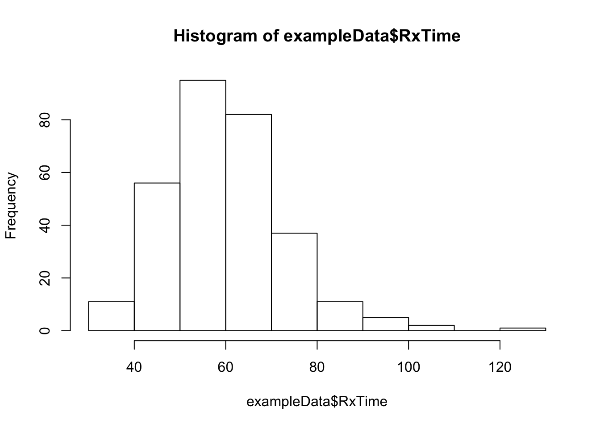
hist(exampleData$RxTime, breaks = 5) # create 5 bins 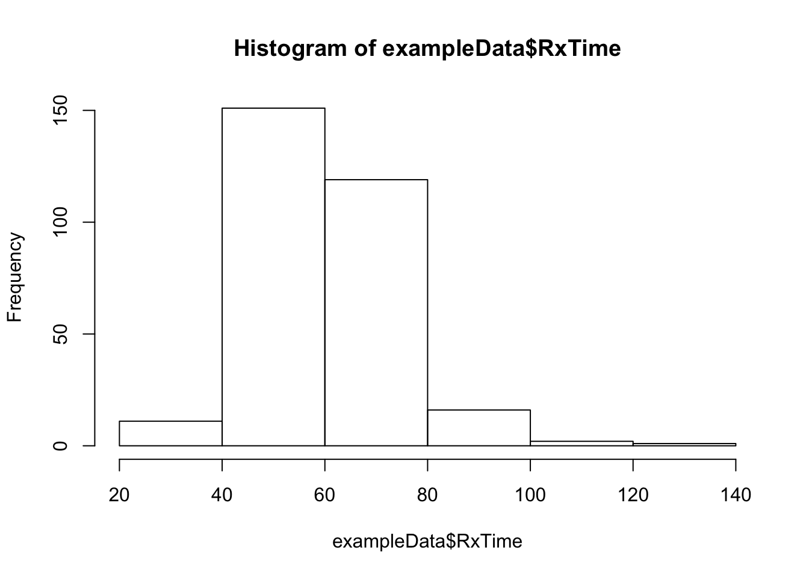
The second line above forces R to create 5 bins. If you recall from Howell, one rule of thumb for the number of bins (there are many) is to use the square root of the number of observations (N). To do that here we can first use the length() function to get the number of observations (i.e., the length of the exampleData$RxTime vector of scores):
length(exampleData$RxTime) # length of vector## [1] 300ASIDE: Note that length works on vectors, but not on entire data frames (multiple columns of data). Vectors are 1 dinmensional… thing of a line of data. Data sets (or data frames) are 2D (colmuns and rows of data). Since each column contains our variables, the number of obervations corresponds to the number of rows in the data set. So, to get the “length” you just need to count the number of rows:
nrow(exampleData) # number of rows in the data set (each row corresponds to an observation)## [1] 300Returning to the ‘optimal’ number of bins, be can now put together the following:
N <- length(exampleData$RxTime)
hist(exampleData$RxTime, breaks = sqrt(N)) # create square root of N bins 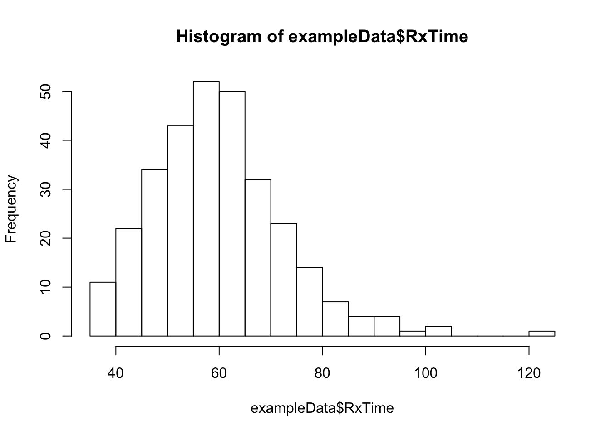
2.2.2 Plotting a histogram with ggplot()
This section assumes you have completed this week’s DataCamp assignment that includes a wonderful introduction to plotting with ggplot(). If you have yet to do so, please go there first.
Now let’s try fitting a normal curve to our histogram. For this we are going to move into more complex ways of plotting data using ggplot2 from the tidyverse. You’ll be introduced to the tidyverse in this week’s DataCamp homework assignments. I suggest looking there and at the Demos Ch. 10 & 11 for another walkthrough. The Field text, Ch. 4 also covers ggplot extensively.
Fisrt let’s use ggplot() to create a histogram. To get a feel for each step, run through this code line by line in RStudio:
# load in tidyverse if you haven't already
pacman::p_load(tidyverse)
# intiial step i identify data and grouping parameters:
histPlot1 <- ggplot2::ggplot(data = exampleData, aes(x=RxTime))
histPlot1 # note that this produces a blank slate but the parameters are locked in.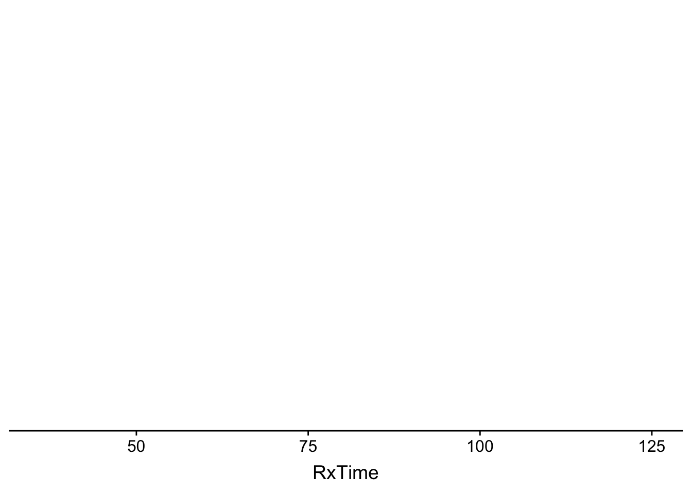
# take histPlot 1 (blank plot) and paint a layer on top of it
# tell ggplot what to do (this is where you actually build the graphics):
histPlot2 <- histPlot1 +
geom_histogram(binwidth = 5,
color = "orange", # what color is the outline of bars
fill = "green") # what color to fill the bars with
histPlot2 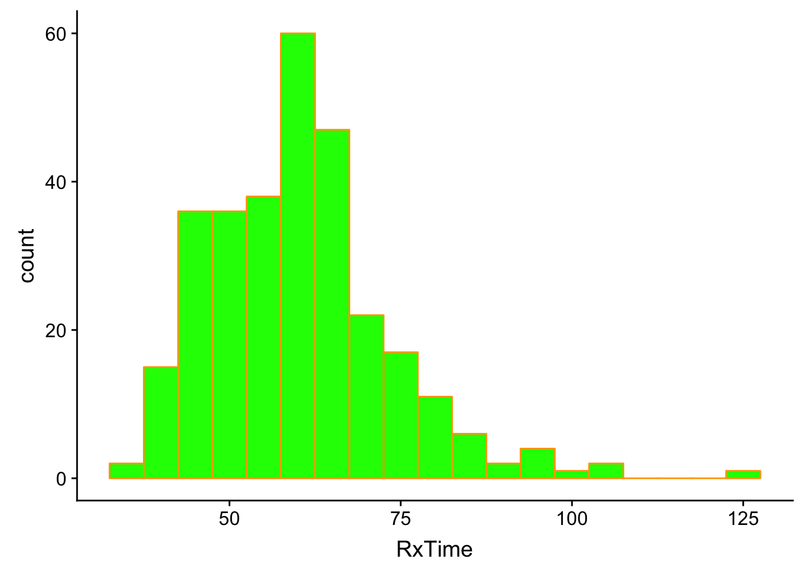
I intentially made a hideous looking plot above to show you what the additional arguments do. Also note that with ggplot() you modify the width of the bin binwidth rather than the number of bins, or breaks as in hist().
Okay, now to add a curve representing the normal distribution. One important thing to note is that the histogram that is ultimately produced here has probability density (think like % of scores) on the y-axis instead of frequency (# of scores).
# take histPlot 1 (blank plot) and paint a layer on top of it tell ggplot what to
# do (this is where you actually build the graphics):
histPlot3 <- histPlot1 + geom_histogram(binwidth = 5, color = "black", fill = "white",
aes(y = ..density..)) # turns plot into density plot
histPlot3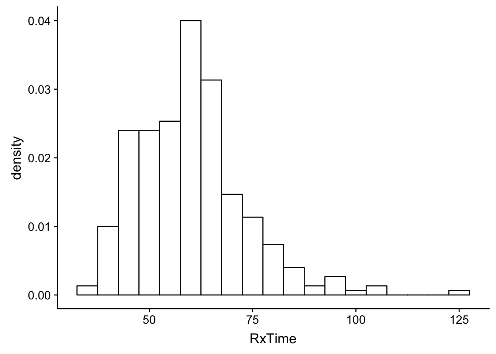
notice that histPlot3 is a density plot rather frequency plot from above
# add a normal curve to density plot:
histPlot4 <- histPlot3 +
stat_function(fun = dnorm, # generate theoretical norm data
color = "red", # color the line red
args=list(mean = mean(exampleData$RxTime), # build around mean
sd = sd(exampleData$RxTime))) # & standard devation
histPlot4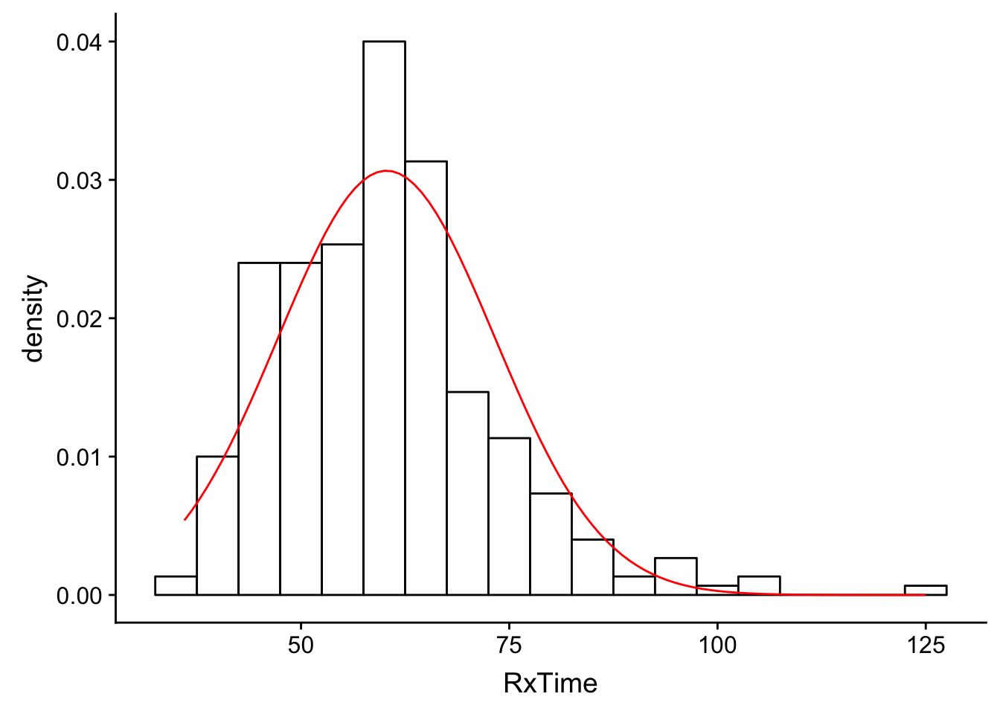
Howell also mentions a better alternative to the normal curve, a kernel density plot. To fit a kernel density plot to our histogram we can invoke:
Howell also mentions a better alternative to the normal curve, a kernel density plot. To fit a kernel density plot to our histogram (histPlot3) we can invoke:
# hisPlot 3 was the base histogram without curve
histPlot3 + geom_density()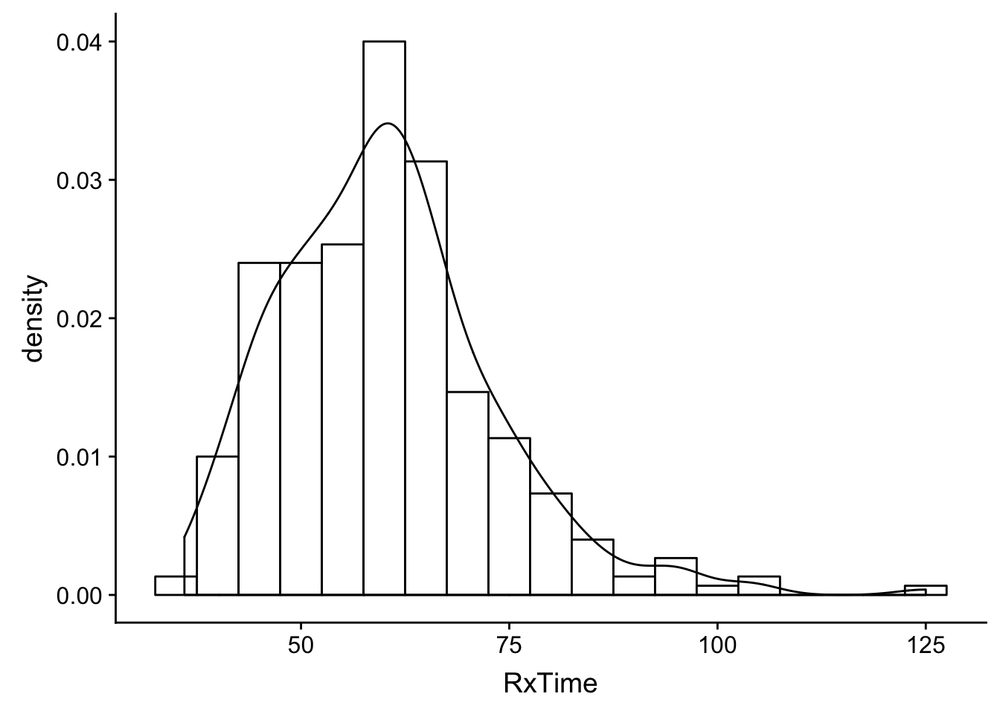
and let’s make the x-axis label a little more transparent with xlab()
histPlot3 + geom_density() + xlab("Reaction time (ms)")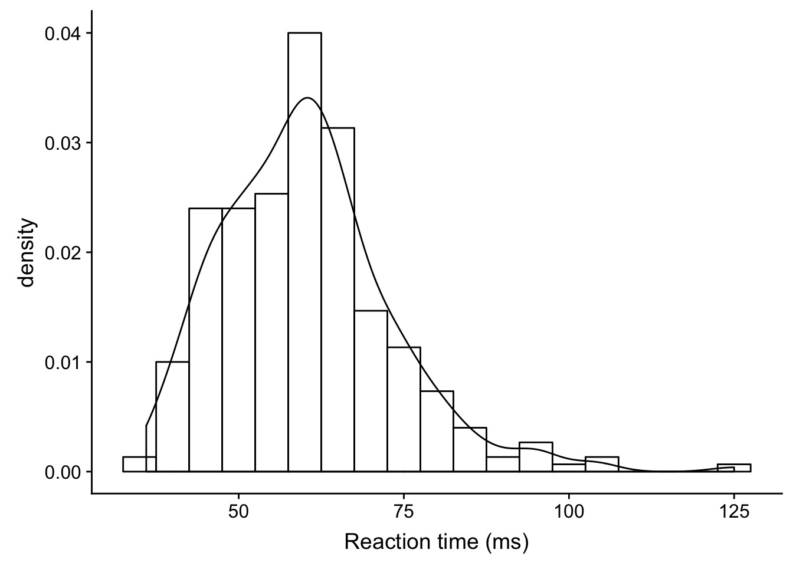
Any guesses on how to change the y-axis label to “Percent of scores”?
2.3 Plotting your data in a boxplot:
Let’s recreate the boxplot from slide 7 of the lecture (Figure 2.15 - Howell). Before we proceed, I would like to draw you attention to a characteristic of the NStim column in our exampleData dataset.
psych::describe(exampleData)## vars n mean sd median trimmed mad min max range skew
## Trial 1 300 150.50 86.75 150.5 150.5 111.19 1 300 299 0.00
## RxTime 2 300 60.26 13.01 59.5 59.3 11.12 36 125 89 0.97
## NStim 3 300 3.00 1.64 3.0 3.0 2.97 1 5 4 0.00
## YesNo 4 300 1.50 0.50 1.5 1.5 0.74 1 2 1 0.00
## kurtosis se
## Trial -1.21 5.01
## RxTime 2.12 0.75
## NStim -1.51 0.09
## YesNo -2.01 0.032.3.1 turning numeric data into categorical
As you can see we get a mean, sd, median, etc for NStim, BUT SHOULD WE? The number of stimuli is not numerical properly… but instead represent experimental categories. The same can be said for the YesNo data. We need to tell R that these data are categories, or factors and not continuous numbers. To do so we can call on the factor() function as below.
# convert a numeric to a categorical (i.e., make a factor)
factor(exampleData$NStim)## [1] 1 1 1 1 1 1 1 1 1 1 1 1 1 1 1 1 1 1 1 1 1 1 1 1 1 1 1 1 1 1 1 1 1 1 1
## [36] 1 1 1 1 1 1 1 1 1 1 1 1 1 1 1 1 1 1 1 1 1 1 1 1 1 1 1 1 1 1 1 1 1 1 1
## [71] 1 1 1 1 1 1 1 1 1 1 1 1 1 1 1 1 1 1 1 1 1 1 1 1 1 1 1 1 1 1 3 3 3 3 3
## [106] 3 3 3 3 3 3 3 3 3 3 3 3 3 3 3 3 3 3 3 3 3 3 3 3 3 3 3 3 3 3 3 3 3 3 3
## [141] 3 3 3 3 3 3 3 3 3 3 3 3 3 3 3 3 3 3 3 3 3 3 3 3 3 3 3 3 3 3 3 3 3 3 3
## [176] 3 3 3 3 3 3 3 3 3 3 3 3 3 3 3 3 3 3 3 3 3 3 3 3 3 5 5 5 5 5 5 5 5 5 5
## [211] 5 5 5 5 5 5 5 5 5 5 5 5 5 5 5 5 5 5 5 5 5 5 5 5 5 5 5 5 5 5 5 5 5 5 5
## [246] 5 5 5 5 5 5 5 5 5 5 5 5 5 5 5 5 5 5 5 5 5 5 5 5 5 5 5 5 5 5 5 5 5 5 5
## [281] 5 5 5 5 5 5 5 5 5 5 5 5 5 5 5 5 5 5 5 5
## Levels: 1 3 5When you run the line above you’ll note at the end of the output it mentions “Levels: 1 3 5”. This is telling you that in this vector, there are three levels, or conditions in this factor- number of stimuli = 1; number of stimuli = 3; number of stimuli = 5. To connect this factorized vector to your original data set, you can either create a new column in the data set or overwrite the original NStim column that you are replacing. For beginners I would recommend adding a new column.
# 1. create a new vector attached to the original data frame To do this you can
# create a blank column by invoking [dataset$newcolumn name] and then fill it
# with the factorized data:
exampleData$categoricalNStim <- factor(exampleData$NStim)
psych::describe(exampleData)## vars n mean sd median trimmed mad min max
## Trial 1 300 150.50 86.75 150.5 150.5 111.19 1 300
## RxTime 2 300 60.26 13.01 59.5 59.3 11.12 36 125
## NStim 3 300 3.00 1.64 3.0 3.0 2.97 1 5
## YesNo 4 300 1.50 0.50 1.5 1.5 0.74 1 2
## categoricalNStim* 5 300 2.00 0.82 2.0 2.0 1.48 1 3
## range skew kurtosis se
## Trial 299 0.00 -1.21 5.01
## RxTime 89 0.97 2.12 0.75
## NStim 4 0.00 -1.51 0.09
## YesNo 1 0.00 -2.01 0.03
## categoricalNStim* 2 0.00 -1.51 0.05The asterisk next to categoricalNStim lets you know it’s categorical. Aternatively you can use summary():
summary(exampleData)## Trial RxTime NStim YesNo
## Min. : 1.00 Min. : 36.00 Min. :1 Min. :1.0
## 1st Qu.: 75.75 1st Qu.: 51.00 1st Qu.:1 1st Qu.:1.0
## Median :150.50 Median : 59.50 Median :3 Median :1.5
## Mean :150.50 Mean : 60.26 Mean :3 Mean :1.5
## 3rd Qu.:225.25 3rd Qu.: 67.00 3rd Qu.:5 3rd Qu.:2.0
## Max. :300.00 Max. :125.00 Max. :5 Max. :2.0
## categoricalNStim
## 1:100
## 3:100
## 5:100
##
##
## # also note that summary() now tells you the number of obsevations rather than
# trying to compute descriptive stats
# 3. or you can overwrite the original column Be careful doing this. Once you
# overwrite you can't go back
exampleData$NStim <- factor(exampleData$NStim)
psych::describe(exampleData) # star lets you know it's categorical## vars n mean sd median trimmed mad min max
## Trial 1 300 150.50 86.75 150.5 150.5 111.19 1 300
## RxTime 2 300 60.26 13.01 59.5 59.3 11.12 36 125
## NStim* 3 300 2.00 0.82 2.0 2.0 1.48 1 3
## YesNo 4 300 1.50 0.50 1.5 1.5 0.74 1 2
## categoricalNStim* 5 300 2.00 0.82 2.0 2.0 1.48 1 3
## range skew kurtosis se
## Trial 299 0.00 -1.21 5.01
## RxTime 89 0.97 2.12 0.75
## NStim* 2 0.00 -1.51 0.05
## YesNo 1 0.00 -2.01 0.03
## categoricalNStim* 2 0.00 -1.51 0.05summary(exampleData)## Trial RxTime NStim YesNo categoricalNStim
## Min. : 1.00 Min. : 36.00 1:100 Min. :1.0 1:100
## 1st Qu.: 75.75 1st Qu.: 51.00 3:100 1st Qu.:1.0 3:100
## Median :150.50 Median : 59.50 5:100 Median :1.5 5:100
## Mean :150.50 Mean : 60.26 Mean :1.5
## 3rd Qu.:225.25 3rd Qu.: 67.00 3rd Qu.:2.0
## Max. :300.00 Max. :125.00 Max. :2.02.3.2 boxplotting using ggplot()
To create a boxplot of the entire data set (regardless of NStim) we can:
boxPlot <- ggplot2::ggplot(data = exampleData, aes(y = RxTime))
boxPlot1 <- boxPlot + geom_boxplot()
boxPlot1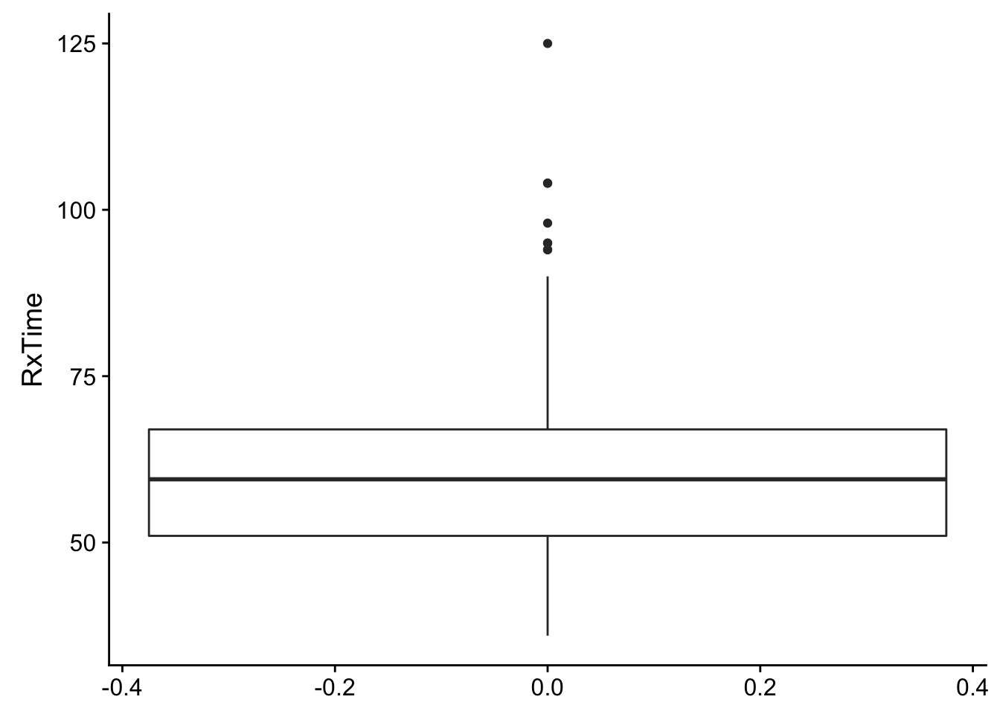
Note that the x-axis in this plot is meaningless.
Now let’s take a look at the data that will be boxplotted as a function of NStim groups. Here I want to note that psych::describeBy has an additional argument to display the quantiles:
psych::describeBy(exampleData, group = exampleData$NStim, quant = c(0.25, 0.75))##
## Descriptive statistics by group
## group: 1
## vars n mean sd median trimmed mad min max range
## Trial 1 100 50.50 29.01 50.5 50.50 37.06 1 100 99
## RxTime 2 100 53.27 13.36 50.0 51.27 8.90 36 104 68
## NStim* 3 100 1.00 0.00 1.0 1.00 0.00 1 1 0
## YesNo 4 100 1.50 0.50 1.5 1.50 0.74 1 2 1
## categoricalNStim* 5 100 1.00 0.00 1.0 1.00 0.00 1 1 0
## skew kurtosis se Q0.25 Q0.75
## Trial 0.0 -1.24 2.90 25.75 75.25
## RxTime 1.7 3.34 1.34 45.00 57.25
## NStim* NaN NaN 0.00 1.00 1.00
## YesNo 0.0 -2.02 0.05 1.00 2.00
## categoricalNStim* NaN NaN 0.00 1.00 1.00
## --------------------------------------------------------
## group: 3
## vars n mean sd median trimmed mad min max range
## Trial 1 100 150.50 29.01 150.5 150.50 37.06 101 200 99
## RxTime 2 100 60.65 9.41 60.0 60.01 7.41 42 95 53
## NStim* 3 100 2.00 0.00 2.0 2.00 0.00 2 2 0
## YesNo 4 100 1.50 0.50 1.5 1.50 0.74 1 2 1
## categoricalNStim* 5 100 2.00 0.00 2.0 2.00 0.00 2 2 0
## skew kurtosis se Q0.25 Q0.75
## Trial 0.00 -1.24 2.90 125.75 175.25
## RxTime 0.78 1.13 0.94 53.75 64.25
## NStim* NaN NaN 0.00 2.00 2.00
## YesNo 0.00 -2.02 0.05 1.00 2.00
## categoricalNStim* NaN NaN 0.00 2.00 2.00
## --------------------------------------------------------
## group: 5
## vars n mean sd median trimmed mad min max range
## Trial 1 100 250.50 29.01 250.5 250.50 37.06 201 300 99
## RxTime 2 100 66.86 12.28 65.0 65.91 9.64 39 125 86
## NStim* 3 100 3.00 0.00 3.0 3.00 0.00 3 3 0
## YesNo 4 100 1.50 0.50 1.5 1.50 0.74 1 2 1
## categoricalNStim* 5 100 3.00 0.00 3.0 3.00 0.00 3 3 0
## skew kurtosis se Q0.25 Q0.75
## Trial 0.00 -1.24 2.90 225.75 275.25
## RxTime 1.29 4.03 1.23 59.75 72.50
## NStim* NaN NaN 0.00 3.00 3.00
## YesNo 0.00 -2.02 0.05 1.00 2.00
## categoricalNStim* NaN NaN 0.00 3.00 3.00To plot this we need to tell R to put different distributions at different points along the x-axis
boxPlot <- ggplot2::ggplot(data = exampleData, aes(y = RxTime, x = categoricalNStim))
boxPlot1 <- boxPlot + geom_boxplot()
boxPlot1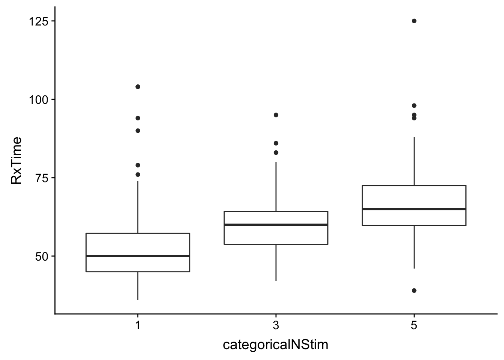
Before leaving I want to show what would’ve happended in the latter case if we didn’t correct NStim and left it as a numeric variable rather than converting to a categorical:
# re-importing original data
exampleData <- data.table::fread("https://www.uvm.edu/~dhowell/methods8/DataFiles/Tab2-1.dat")
# creating the boxplot using exact code from chunk above:
boxPlot <- ggplot2::ggplot(data = exampleData, aes(y = RxTime, x = NStim))
boxPlot1 <- boxPlot + geom_boxplot()
boxPlot1## Warning: Continuous x aesthetic -- did you forget aes(group=...)?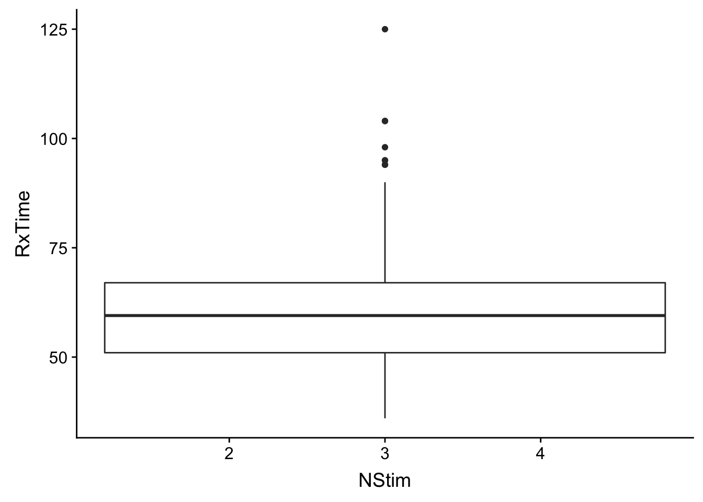
2.4 Assessing the data for normality
As mentioned in class, one of the key underlying assumptions of our inferential stat is that the data being analyzed is normally distributed. For this example I’ll be using some data that I had intended to work from in this week’s workshop. This data is located on the Box drive in weeklySchedule/week2/workshop/InClass_1.csv. To proceed, you may download it from BOX drive to your computer and import, or you can access it directly from the shared folder…
InClass_1 <- read.delim("https://uc.box.com/shared/static/3u49i5zrtpz5pvtmv566eizobd01oqby.csv",
sep = ",")and now plotting this data related to BehaviorX with a normal curve overlayed as in slide #19:
# load in tidyverse if you haven't already
pacman::p_load(tidyverse)
# identify data and grouping parameters:
histPlot <- ggplot2::ggplot(data = InClass_1, aes(x = BehaviorX)) + geom_histogram(binwidth = 5,
color = "black", fill = "white", aes(y = ..density..)) + stat_function(fun = dnorm,
color = "red", args = list(mean = mean(InClass_1$BehaviorX), sd = sd(InClass_1$BehaviorX)))
histPlot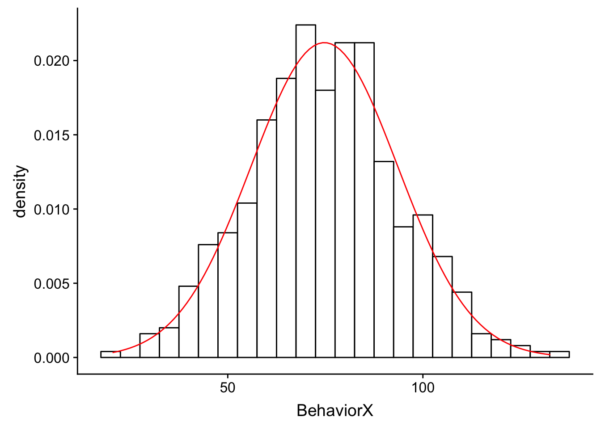
As you can see the distribution is approximately normal. We can get a further assessment of skew and kurtosis using psych::describe():
psych::describe(InClass_1)## vars n mean sd median trimmed mad min max range
## BehaviorX 1 500 74.76 18.81 74.61 74.62 18.17 20.48 132.65 112.17
## BehaviorY 2 500 37.31 24.17 34.53 35.68 27.15 0.79 110.02 109.23
## skew kurtosis se
## BehaviorX 0.09 -0.11 0.84
## BehaviorY 0.53 -0.36 1.08As conveyed here, our values for skew and kurtosis fall within ideal ranges.
2.4.1 Q-Q Plots
Another method of assessing normalitly is by using a quantile-quantile, or Q-Q plot. A Q-Q plot is the plot of the sample quantiles from your data against a theoretical normal distribution. Q-Q plots typically use a straight line y=x as an assessment device where any deviation away from the straight line indicates deviation from normality.
To assess our data we can invoke both of following functions on our data:
qqnorm(InClass_1$BehaviorX)
qqline(InClass_1$BehaviorX)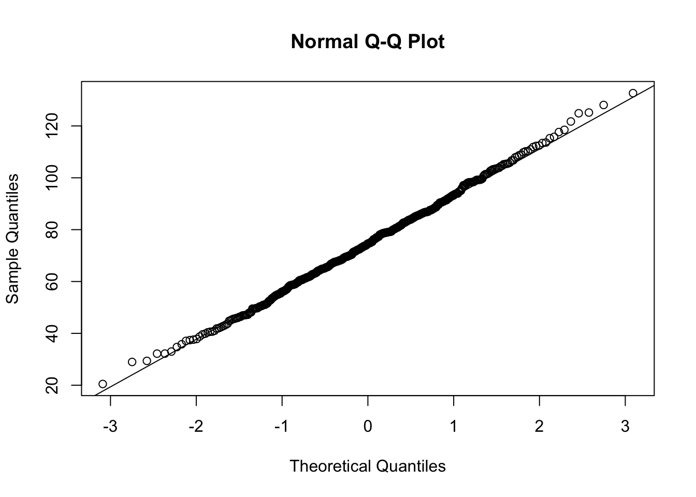
Looking pretty good! Check out InClass_1$BehaviorY on your own.
2.4.2 Generating a theoretical normal distribution.
We can also generate a random normal distribution using the rnorm() function. By filling in the appropriate arguments we can create a set of data of a desired length with a desired mean and standarad deviation.
numSamples <- 20
set.seed(1) # we'll come back to this next class
randomGenerated <- rnorm(n = numSamples,mean = 45,sd = 5.0)
ranGen_df <- data_frame(randomGenerated) # coerce to a data frame for ggplot
# creating a histogram:
# note I did this all in one step:
normalPlot <- ggplot2::ggplot(data = ranGen_df, aes(x=randomGenerated)) +
geom_histogram(binwidth = 5,
color = "black",
fill = "white",
aes(y=..density..)) +
stat_function(fun = dnorm, # generate theoretical norm data
color = "red", # color the line red
args=list(mean = mean(ranGen_df$randomGenerated), # build around mean
sd = sd(ranGen_df$randomGenerated))) # & standard devation
normalPlot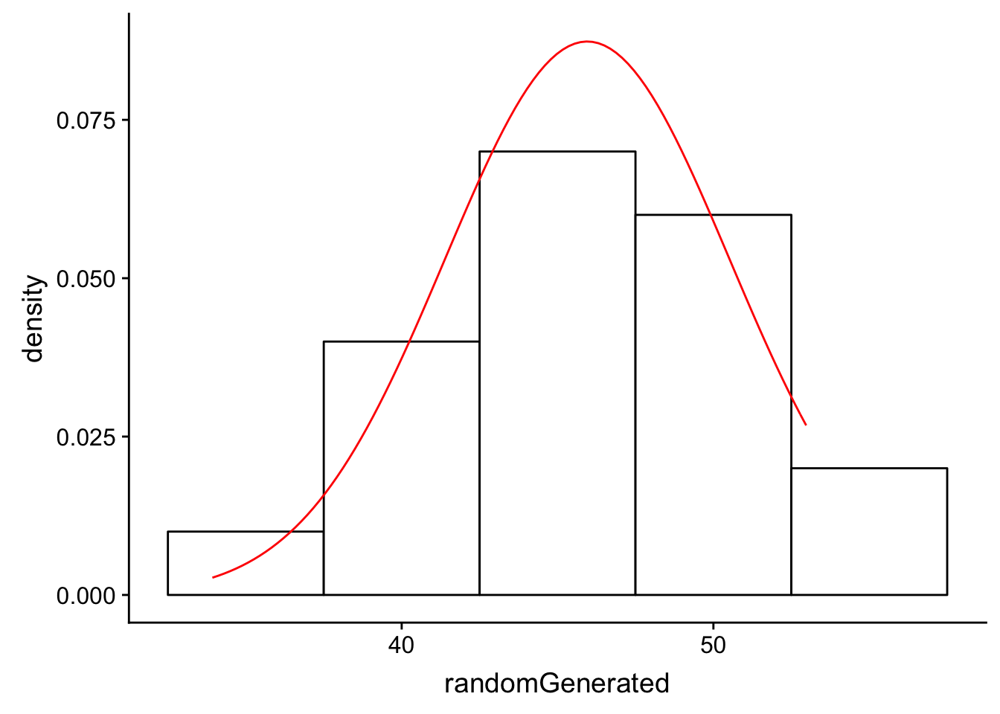
see what happens as you increase the number of samples from 20 to 30 to 50, 100, 1000, 10000. What does this suggest about ideal sample size?
2.5 Subsetting your data
Your homework this week asks you to subset your data by condition and create a plot for each resulting condition (or group). For example in our exampleData there are 3 conditions by NStim: 1, 3, and 5. Using psych::describeBy() we can get summary data for each:
psych::describeBy(exampleData, group = exampleData$NStim)##
## Descriptive statistics by group
## group: 1
## vars n mean sd median trimmed mad min max range skew
## Trial 1 100 50.50 29.01 50.5 50.50 37.06 1 100 99 0.0
## RxTime 2 100 53.27 13.36 50.0 51.27 8.90 36 104 68 1.7
## NStim 3 100 1.00 0.00 1.0 1.00 0.00 1 1 0 NaN
## YesNo 4 100 1.50 0.50 1.5 1.50 0.74 1 2 1 0.0
## kurtosis se
## Trial -1.24 2.90
## RxTime 3.34 1.34
## NStim NaN 0.00
## YesNo -2.02 0.05
## --------------------------------------------------------
## group: 3
## vars n mean sd median trimmed mad min max range skew
## Trial 1 100 150.50 29.01 150.5 150.50 37.06 101 200 99 0.00
## RxTime 2 100 60.65 9.41 60.0 60.01 7.41 42 95 53 0.78
## NStim 3 100 3.00 0.00 3.0 3.00 0.00 3 3 0 NaN
## YesNo 4 100 1.50 0.50 1.5 1.50 0.74 1 2 1 0.00
## kurtosis se
## Trial -1.24 2.90
## RxTime 1.13 0.94
## NStim NaN 0.00
## YesNo -2.02 0.05
## --------------------------------------------------------
## group: 5
## vars n mean sd median trimmed mad min max range skew
## Trial 1 100 250.50 29.01 250.5 250.50 37.06 201 300 99 0.00
## RxTime 2 100 66.86 12.28 65.0 65.91 9.64 39 125 86 1.29
## NStim 3 100 5.00 0.00 5.0 5.00 0.00 5 5 0 NaN
## YesNo 4 100 1.50 0.50 1.5 1.50 0.74 1 2 1 0.00
## kurtosis se
## Trial -1.24 2.90
## RxTime 4.03 1.23
## NStim NaN 0.00
## YesNo -2.02 0.05but we cannot use this to generate a plot. In order to do this we need to split the original data file into three parts, one for each NStim condition. DataCamp introduces you to the dplyr::filter() function this week, which extracts data from a larger set given some criteria. For example to pull our NStim == 1 data from the exampleData data set we can:
dplyr::filter(exampleData, exampleData$NStim == 1)## Trial RxTime NStim YesNo
## 1 1 40 1 1
## 2 2 41 1 1
## 3 3 47 1 1
## 4 4 38 1 1
## 5 5 40 1 1
## 6 6 37 1 1
## 7 7 38 1 1
## 8 8 47 1 1
## 9 9 45 1 1
## 10 10 61 1 1
## 11 11 54 1 1
## 12 12 67 1 1
## 13 13 49 1 1
## 14 14 43 1 1
## 15 15 52 1 1
## 16 16 39 1 1
## 17 17 46 1 1
## 18 18 47 1 1
## 19 19 45 1 1
## 20 20 43 1 1
## 21 21 39 1 1
## 22 22 49 1 1
## 23 23 50 1 1
## 24 24 44 1 1
## 25 25 53 1 1
## 26 26 46 1 1
## 27 27 64 1 1
## 28 28 51 1 1
## 29 29 40 1 1
## 30 30 41 1 1
## 31 31 44 1 1
## 32 32 48 1 1
## 33 33 50 1 1
## 34 34 42 1 1
## 35 35 90 1 1
## 36 36 51 1 1
## 37 37 55 1 1
## 38 38 60 1 1
## 39 39 47 1 1
## 40 40 45 1 1
## 41 41 41 1 1
## 42 42 42 1 1
## 43 43 72 1 1
## 44 44 36 1 1
## 45 45 43 1 1
## 46 46 94 1 1
## 47 47 45 1 1
## 48 48 51 1 1
## 49 49 46 1 1
## 50 50 52 1 1
## 51 51 52 1 2
## 52 52 45 1 2
## 53 53 74 1 2
## 54 54 56 1 2
## 55 55 53 1 2
## 56 56 59 1 2
## 57 57 43 1 2
## 58 58 46 1 2
## 59 59 51 1 2
## 60 60 40 1 2
## 61 61 48 1 2
## 62 62 47 1 2
## 63 63 57 1 2
## 64 64 54 1 2
## 65 65 44 1 2
## 66 66 56 1 2
## 67 67 47 1 2
## 68 68 62 1 2
## 69 69 44 1 2
## 70 70 53 1 2
## 71 71 48 1 2
## 72 72 104 1 2
## 73 73 50 1 2
## 74 74 58 1 2
## 75 75 52 1 2
## 76 76 57 1 2
## 77 77 66 1 2
## 78 78 49 1 2
## 79 79 59 1 2
## 80 80 56 1 2
## 81 81 71 1 2
## 82 82 76 1 2
## 83 83 54 1 2
## 84 84 71 1 2
## 85 85 44 1 2
## 86 86 67 1 2
## 87 87 45 1 2
## 88 88 79 1 2
## 89 89 46 1 2
## 90 90 57 1 2
## 91 91 58 1 2
## 92 92 47 1 2
## 93 93 73 1 2
## 94 94 67 1 2
## 95 95 46 1 2
## 96 96 57 1 2
## 97 97 52 1 2
## 98 98 61 1 2
## 99 99 72 1 2
## 100 100 104 1 2To create plots related to this data you can save the above result to a new object and then create your plots as described above. For example, to get RxTime for NStim == 1:
NStim1_data <- dplyr::filter(exampleData,exampleData$NStim==1)
# you can use hist() here but I'm going to do ggplot()
NStim1_plot <- ggplot2::ggplot(data = NStim1_data, aes(x=RxTime)) +
geom_histogram(binwidth = 5,
color = "black",
fill = "white",
aes(y=..density..)) +
stat_function(fun = dnorm, # generate theoretical norm data
color = "red", # color the line red
args=list(mean = mean(NStim1_data$RxTime), # build around mean
sd = sd(NStim1_data$RxTime))) # & standard devation
NStim1_plot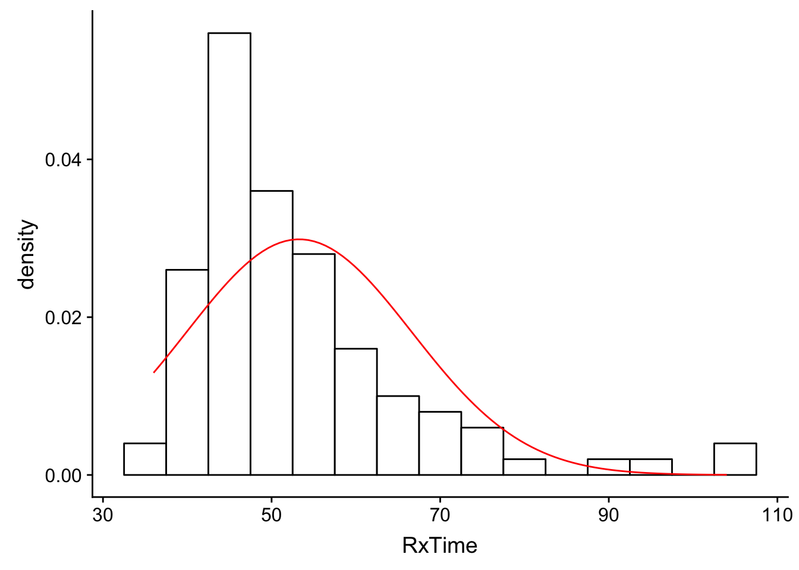
Go back and do this with NStim==2 and NStim==3 for practice. Be sure to create new objects for each subset (e.g. NStim2_data) and plot (`NStim2_plot) so that you don’t overwrite what you’ve done before.
This is a good place to stop for this week. However if you want to continue on, in the next section I’m going to cash out all of that rambling about “the importance of means” that I’ve been doing
2.6 Looking ahead: Means and better models
Hold this one in your back pocket for now. This is the 2nd week in a row that I’ve stressed the importance of the mean. Last week, I said that the mean is the best guess for any individual score if you know nothing else other than the data is normally distributed. BUT it’s a very limited predictor.
Here we will use R to extend our in-class example of the mean as the best model if you’ve got nothing else going for you. We’ll also use this to get some more practice with variable assignment and working with vectors.
Revisting our in class example from Week 1:
tehran <- 38
nabiha <- 28
james <- 24
chris <- 22
margaret <- 27
emily <- 22
sarah <- 24
nate <- 26
tyra <- 22
julia <- 24
angela <- 28
allie <- 24
daniel <- 29
sierra <- 24Everyone’s age (numerical) is assigned to an object (their name). From here there are several ways to get a mean age for the class. You could just simply follow the formula, the sum of the individual ages divided by the number of people in the class:
sum(tehran, nabiha, james, chris, margaret, emily, sarah, nate, tyra, julia, angela,
allie, daniel, sierra)/14## [1] 25.85714Alternatively, you could use the mean() function. However, mean requires that all of these number be bound together into a vector (see Demos online text, 1.6). This is simply accomplished by using the concationation function,c():
# first we concatonate our data:
ages <- c(tehran, nabiha, james, chris, margaret, emily, sarah, nate, tyra, julia,
angela, allie, daniel, sierra)
# now we get the mean:
mean(ages)## [1] 25.85714Of the two options, the second is much more preferable. Once you get your individual data vectored (grouped) into assigned object you can perform functions on that object very easily, like:
# doubling everyone's age:
ages * 2## [1] 76 56 48 44 54 44 48 52 44 48 56 48 58 48# getting the log of everyone's age:
log(ages)## [1] 3.637586 3.332205 3.178054 3.091042 3.295837 3.091042 3.178054
## [8] 3.258097 3.091042 3.178054 3.332205 3.178054 3.367296 3.178054# getting the square root:
sqrt(ages)## [1] 6.164414 5.291503 4.898979 4.690416 5.196152 4.690416 4.898979
## [8] 5.099020 4.690416 4.898979 5.291503 4.898979 5.385165 4.898979# cubing:
ages^3## [1] 54872 21952 13824 10648 19683 10648 13824 17576 10648 13824 21952
## [12] 13824 24389 13824or perhaps most important for our present concerns, getting the mean, median, standard deviation, minimum value, maximum value, skew and kurtosis of our ages:
psych::describe(ages) # gets both min and max## vars n mean sd median trimmed mad min max range skew kurtosis se
## X1 1 14 25.86 4.2 24 25.17 2.97 22 38 16 1.58 2.17 1.122.6.1 mean as highest probability:
Okay, now we are going to demonstrate that if you know nothing else about your data, the mean is the best guess in terms of probability. We know that if your data are normally In this case we can plot our age data to a density histogram. I’m also going to create a vertical line on the plot indicating the mean age:
classAges_df <- data_frame(ages) # coerce to a data frame for ggplot
# creating a histogram:
# note I did this all in one step:
classAgesPlot <- ggplot2::ggplot(data = classAges_df, aes(x=ages)) +
geom_histogram(binwidth = 1,
color = "black",
fill = "white",
aes(y=..density..)) +
stat_function(fun = dnorm, # generate theoretical norm data
color = "red", # color the line red
args=list(mean = mean(classAges_df$ages), # build around mean
sd = sd(classAges_df$ages))) +
geom_vline(xintercept=mean(classAges_df$ages),
color="red",
linetype="dashed")
classAgesPlot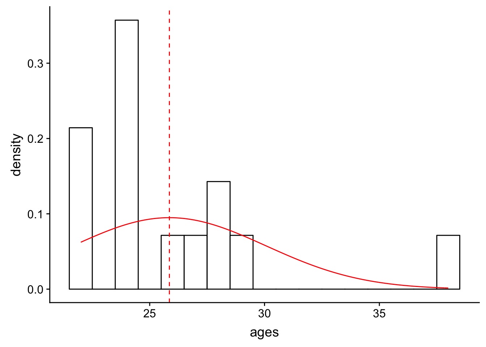
So not too far off from the actual best guess, mode = 24, which represents over 30% of our scores, but still pretty close.
The next two sections involve a little bit of complex coding that will be rehearsed in next week’s workshop. For now I have two goals, to 1. demonstrate the mean produces the least amount of summed error and 2. by virtue of that minimized the sum-of-squared differences, or SS. The latter is arguably more important as SS is used to calculate variability and is most diectly used in assessing inferential models.
2.6.2 mean as fulcrum point
This week we also decribed the mean as the balance point for our data, that is that the sum of all deviation scores from the mean = 0: \(\sum{X-\bar{X}} = 0\). That is the mean values produces the least amount of summed error, 0.
Again, imagine that you are encountering someone in class and are asked to guess their age (and WIN! WIN! WIN!). The only info that you have is the range of our ages:
range(ages)## [1] 22 38In what follows, I’m going to iterate through each possible age (guess) within our range and get the sum of difference scores, or sumDiff. sumDiff is obtained by subtracting each age from a given value (see Howell 2.8). Typically this value is the mean. For example say I guessed 27:
# 1. guessed age:
guess <- 27
# 2. resulting difference scores, squared
diffScores <- (ages - guess)
# 3. the sum of squares:
sumDiff <- sum(diffScores)
# 4. show the sumDiff (example)
show(sumDiff)## [1] -16Now, I’m going to iterate through every possible age in the range, and save the resulting sumDiffs to a vector, sumDiffguess:
# get ages, repeat of previous chunk:
ages <- c(tehran, nabiha, james, chris, margaret, emily, sarah, nate, tyra, julia,
angela, allie, daniel, sierra)
# create a vector of all possible integers within our range:
rangeAges <- min(ages):max(ages)
# create an empty vector to save our resulting sum of differences
sumDiffguess <- vector()
guessedAge <- vector()
# here 'i' indexes which value from the range to pull, for example when i=1, we
# are pulling the first number in the sequence
for (i in 1:length(rangeAges)) {
guess <- rangeAges[i]
diffScores <- (ages - guess)
sumDiff <- sum(diffScores)
# save results to sumDiffguess
guessedAge[i] <- guess
sumDiffguess[i] <- sumDiff
}
diffAges_df <- data_frame(guessedAge, sumDiffguess) #combine the two vectors to single data frame
show(diffAges_df)## # A tibble: 17 x 2
## guessedAge sumDiffguess
## <int> <dbl>
## 1 22 54
## 2 23 40
## 3 24 26
## 4 25 12
## 5 26 -2
## 6 27 -16
## 7 28 -30
## 8 29 -44
## 9 30 -58
## 10 31 -72
## 11 32 -86
## 12 33 -100
## 13 34 -114
## 14 35 -128
## 15 36 -142
## 16 37 -156
## 17 38 -170Now let’s plot the resulting sum of difference scores as a function of guessed age. The vertical line represents mean age. As you can see this is where our function crosses 0 on the y-axis.
# note I did this all in one step:
sumDiffPlot <- ggplot2::ggplot(data = diffAges_df, aes(x=guessedAge, y=sumDiffguess)) +
geom_point() + geom_line() +
geom_vline(xintercept=mean(ages), # using actual ages from
color="red",
linetype="dashed")
sumDiffPlot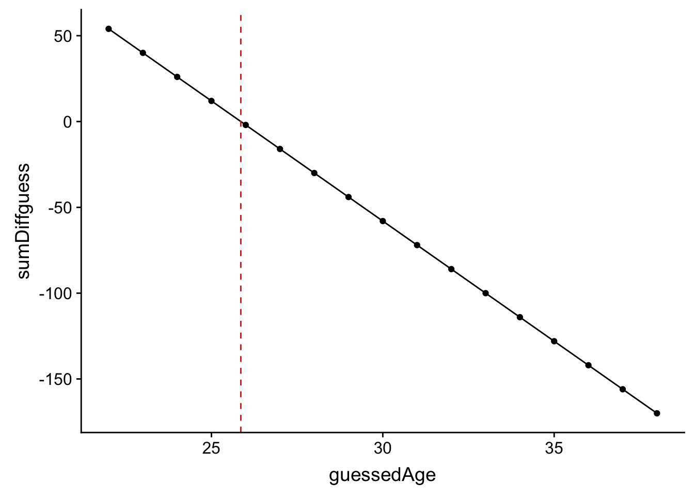
2.6.3 mean as minimizing random error
Of course, in our statistics the sum of squared-differences (or SS) \(\sum{(X-\bar{X})^2}\) is our primary measure rather than the sum of difference in the last example. SS is used to calculate varience \(\frac{\sum{(X-\bar{X})^2}}{N-1}\)and in turn standard deviation, which is just the square root of the variance. Both measures we use to describe variability in a distibution of data. When we know nothing about our data we assume that the scores, and therefore the resulting difference or error from the mean is randomly distributed. Hence the term random error.
First, let’s calculate the resulting SS for each possible guess (similar to above):
# create a vector of all possible integers within our range:
rangeAges <- min(ages):max(ages)
# create an empty vector to save our resulting sum of differences
SSguess <- vector()
guessedAge <- vector()
# here 'i' indexes which value from the range to pull, for example when i=1, we
# are pulling the first number in the sequence
for (i in 1:length(rangeAges)) {
guess <- rangeAges[i]
diffScores <- (ages - guess)
SSDiff <- sum(diffScores^2)
# save SS to SSguess
guessedAge[i] <- guess
SSguess[i] <- SSDiff
}
SS_Ages_df <- data_frame(guessedAge, SSguess) #combine the two vectors to single data frame
show(SS_Ages_df)## # A tibble: 17 x 2
## guessedAge SSguess
## <int> <dbl>
## 1 22 438
## 2 23 344
## 3 24 278
## 4 25 240
## 5 26 230
## 6 27 248
## 7 28 294
## 8 29 368
## 9 30 470
## 10 31 600
## 11 32 758
## 12 33 944
## 13 34 1158
## 14 35 1400
## 15 36 1670
## 16 37 1968
## 17 38 2294Now, let’s see what happens when we plot the resulting SS as a function of guessed age:
SS_Plot <- ggplot2::ggplot(data = SS_Ages_df, aes(x=guessedAge, y=SSguess)) +
geom_point() + geom_smooth() +
geom_vline(xintercept=mean(ages), # using actual ages from
color="red",
linetype="dashed")
SS_Plot## `geom_smooth()` using method = 'loess' and formula 'y ~ x'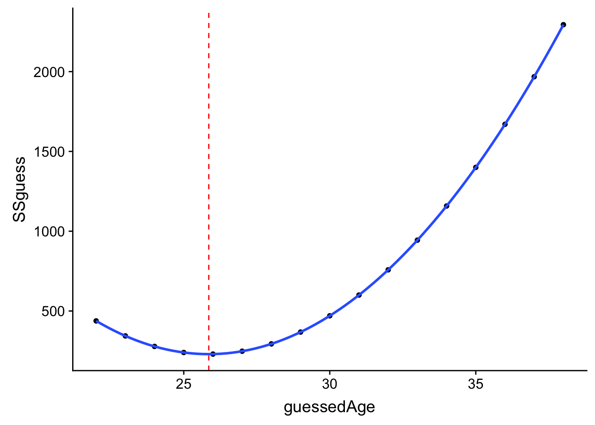
As you can see we get parabola with a minima at our mean.
2.6.4 but we can do better than that
The mean is good as a stab in the dark, but as you can see our SS is still pretty high. If we have other useful information about the nature of our age data, then maybe we can use that to make better preditions. These extra bits of info are our predictors. For example, let’s combine our age data with info on how many years everyone has been out of undergraduate. For the purposes of this example, I’m just going to make this data up:
tehran <- 13
nabiha <- 5
james <- 2
chris <- 1
margaret <- 3
emily <- 1
sarah <- 4
nate <- 2
tyra <- 1
julia <- 3
angela <- 4
allie <- 4
daniel <- 5
sierra <- 3
# create a vector of years since UG:
yearsUG <- c(tehran, nabiha, james, chris, margaret, emily, sarah, nate, tyra, julia,
angela, allie, daniel, sierra)Lets combine ages to yearsUG into a single data_frame and create a scatterplot:
model_df <- data_frame(ages, yearsUG)
# plot age as a function of yearsUG
model_plot <- ggplot2::ggplot(model_df, aes(x = yearsUG, y = ages)) + geom_point()
model_plot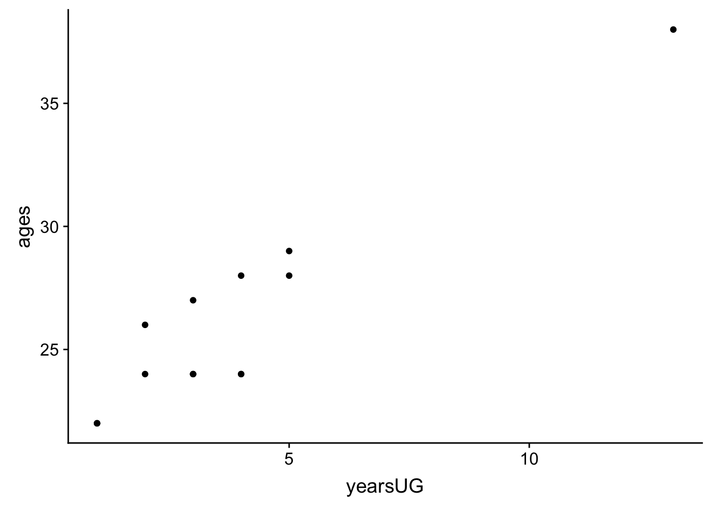
Keeping in mind that our focus this semester will be in linear models. As a simplification, this means that we are looking for an equation of the line that best fits our data (minimizes the resulting SS). The equation for the line that represents the mean would be:
\[Y = mean\ age + 0 * yearsUG\]
This means years since undergrad does not figure into the mean model (it gets multiplied by zero. This results in a horizontal line with mean age as the y-intercept.
model_plot <- model_plot + geom_hline(yintercept = mean(model_df$ages), color = "blue")
model_plot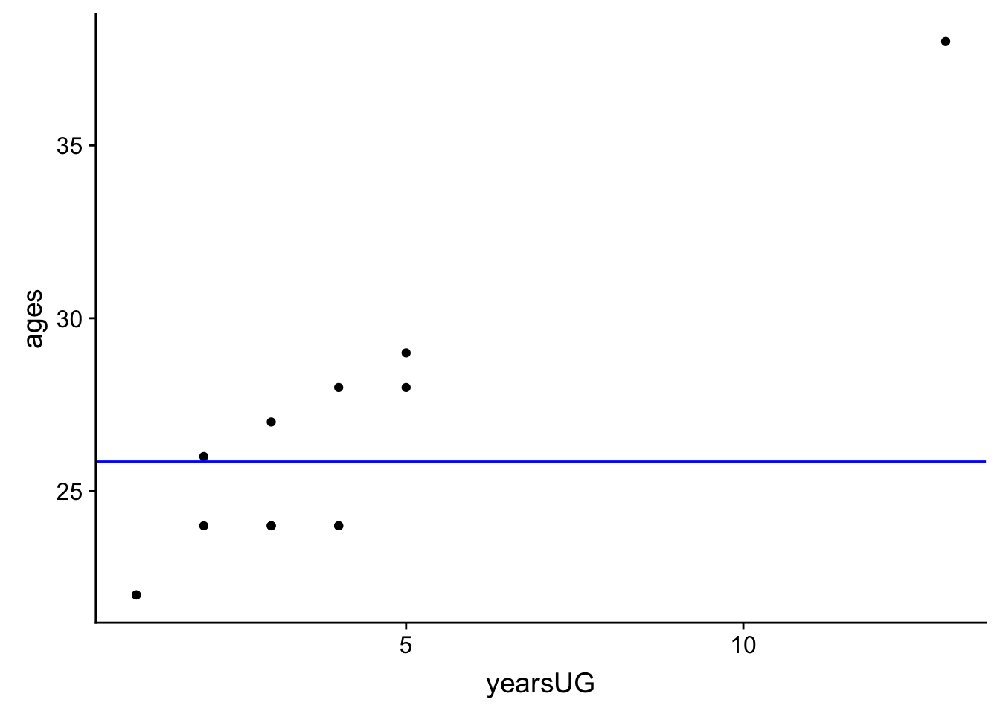
Imagine the difference scores as a straight vertical lines connecting each data point to the means model line. Now compare the means model (blue line) to a model including yearsUG as a predictor (red):
model_plot <- model_plot + stat_smooth(color = "red", method = "lm", se = F)
model_plot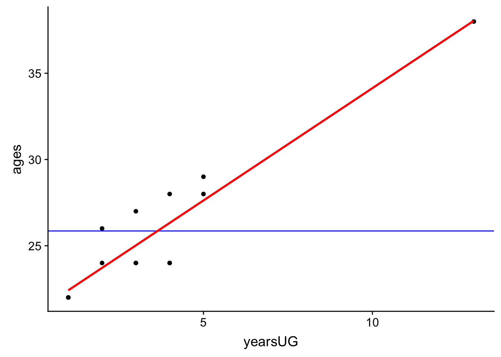
As you may have intuited the lm in the above call stands for “linear model”. Congrats, you just plotted a linear regression!!!! The se adds an error ribbon around the regression line. In this case I used F or FALSE to turn it off.
What’s important here is that from a visual inspection the yearsUG model provides a better fit. Why, because it’s reduced the resulting difference scores (of SS). The sum of the distances from each point to this line with yearsUG as a predictor (red line) is less than the means model (blue line). This is what we mean by “accounting for varience”. The yearsUG model accounts for more varience than the means model—why because it reduces the SS. A critical question that we strive to answer with our statistical tests (like the F-test) is whether the model using additional predictors accounts for more variance above a critical threshold that it may be deemed significant, or unlikely due to chance.
As I mentioned, this is something that will become critically important in a few weeks. For now I just wanted to make this connection to your understanding of the role of the mean while it was still fresh.